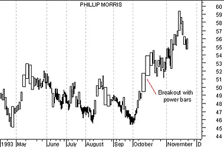

Equivolume
Overview
Equivolume displays prices in a manner that emphasizes the relationship between price and volume. Equivolume was developed by Richard W. Arms, Jr., and is further explained in his book Volume Cycles in the Stock Market.
Instead of displaying volume as an "afterthought" on the lower margin of a chart, Equivolume combines price and volume in a two-dimensional box. The top line of the box is the high for the period and the bottom line is the low for the period. The width of the box is the unique feature of Equivolume--it represents the volume for the period.
Figure 46 shows the components of an Equivolume box:
Figure 46

The bottom scale on an Equivolume chart is based on volume, rather than on dates. This suggests that volume, rather than time, is the guiding influence of price change. To quote Mr. Arms, "If the market wore a wristwatch, it would be divided into shares, not hours."
Candlevolume
Candlevolume charts are a unique hybrid of Equivolume and candlestick charts. Candlevolume charts possess the shadows and body characteristics of candlestick charts, plus the volume width attribute of Equivolume charts. This combination gives you the unique ability to study candlestick patterns in combination with their volume related movements.
Interpretation
The shape of each Equivolume box provides a picture of the supply and demand for the security during a specific trading period. Short and wide boxes (heavy volume accompanied with small changes in price) tend to occur at turning points, while tall and narrow boxes (light volume accompanied with large changes in price) are more likely to occur in established trends.
Especially important are boxes which penetrate support or resistance levels, since volume confirms penetrations. A "power box" is one in which both height and width increase substantially. Power boxes provide excellent confirmation to a breakout. A narrow box, due to light volume, puts the validity of a breakout in question.
Example
The following Equivolume chart shows Phillip Morris' prices. Note the price consolidation from June to September with resistance around $51.50. The strong move above $51.50 in October produced a power box validating the breakout.The following is a Candlevolume chart of the British Pound.
 You can see that this hybrid chart is similar to a
candlestick chart, but the width of the bars vary based on
volume.
You can see that this hybrid chart is similar to a
candlestick chart, but the width of the bars vary based on
volume.